Feb 28 - March 3, 2003
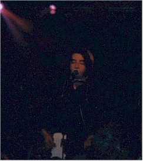 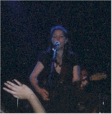 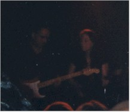 |
|
|
This is Jimmy Green on the left, Susan Tedeschi in the middle, and (you'll
have to trust me on this one) Jimmie Vaughn jamming with Susan in the
picture at the far right. Jimmie was a surprise guest that night - it
was extremely cool.
Jimmy Green was the opening act for Susan and I'm betting he'll be headlining someday, he was very good. I've been a fan of Susan Tedeschi for several years now and she did not disappoint. She put on a great show. |
|
|
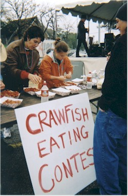 |
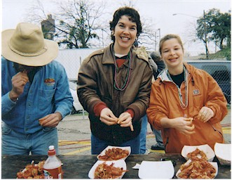 |
|
The next day, Eric went off rock climbing and Amy drove over to join me for
the Austin Mardi Pardi. It was billed as a festival, but that is a
generous name for 12 booths and two stages in a parking lot. However, Austin
being the great music city that it is, they did book some great bands. Case in
point:
Cowboy Mouth. That's the main reason we went to Austin was to see
them play again.
We went to the festival around noon and quickly discovered a Crawfish Eating Contest. Since Amy grew up right on the Gulf, she happens to be very good and very fast at eating crawfish. As soon as we found out that the prize was VIP passes to go backstage with the bands, we were all over it! Our competitor turned out to be a crawfish eating monster. We didn't win the VIP passes, but as you'll see, it all worked out for the best in the end. |
|
| 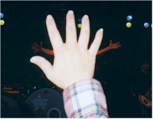 This picture cracks me up. This is Amy's hand and Fred's arms. I laugh every time I look at this picture. |
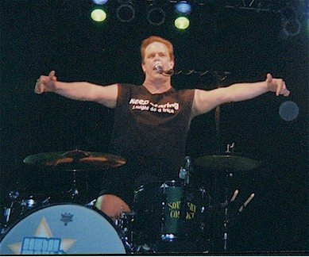 |
|
Here's Fred doing what he does so well. |
|
| 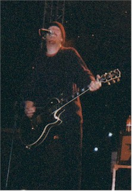 |
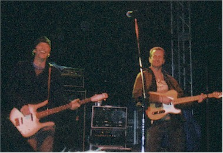 |
| Here is John Thomas Griffith, belting one
out for us |
This is Rob Savoy and Paul Sanchez, having fun and doing their little dance that I love so much to the new song, "Disconnected" |
| 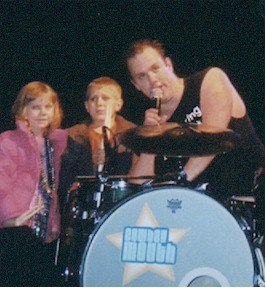 |
Amy and I chatted with several people out in
the crowd before the show. One girl remembered us from the Houston
show and asked Amy about being engaged. We had to break it to
her that the engagement was already off.
Another lady said, "The last time we saw Cowboy Mouth, Fred brought my son up on stage." I burst out that we were there that night - it was last February in Austin at La Zona Rosa. Amy even has a picture of him on stage with Fred. We thought that was very funny. So, wouldn't you know it, this time Fred brought the same boy up on stage and his sister got to go as well. They weren't nearly as happy about it as the parents were, but the kids did great. |
|
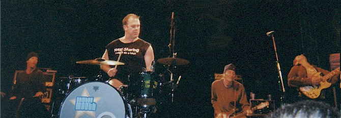 |
|
|
I've never managed to get all of the guys into one picture before, so this is a fun one for me. |
|
| 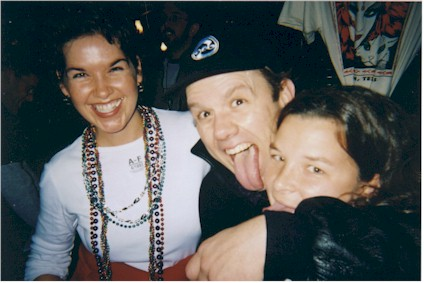 This is me & Amy with Fred at the autograph signing after the show. Fred is so great about coming out after every show to sign
autographs, We stayed for part of the Spin Doctors concert which followed, but no
one can We swarmed poor Rob and pestered him with autograph requests and
questions. We decided to hang out in the lobby in hopes that Paul Sanchez would
come So you see, we got to eat all that crawfish and got our VIP passes too! |
|